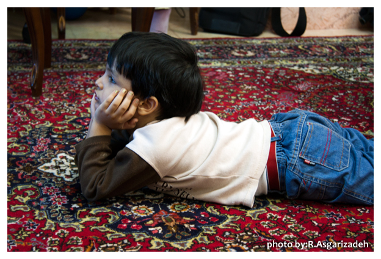
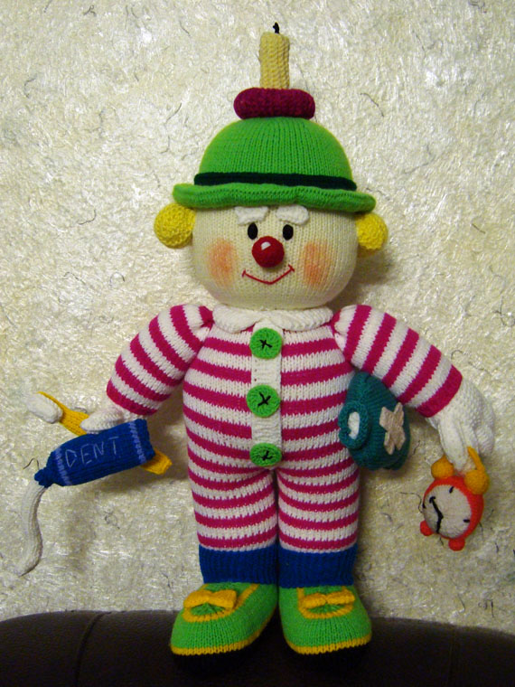

|
|

نیمای عزیزم : دارم برايت يك عروسك دلقك بزرگ ميبافم ...
يكشنبه8 خرداد 1390
تغییر برای برابری - همزمان با سالروز تولد مدافع صادق و آموزگار ایستادگی مان نسرین ستوده، نامه ای را که نسرین قبل از ملاقات حضوری اخیر برای نیما نوشته بود به چاپ می رسانیم. یکی از ویژگی های نسرين ستوده که ستودنی است ثبت تاریخ اکنون است برای فرزندان آینده .او برای کودکانش خاطرات دوران كودكي شان را ثبت می کرد تا هنگامی بزرگسالي در اختبارشان بگذارد. هنگام تفتیش خانه نه تنها به این کار بزرگ او ارج ننهادند که دفاتر خاطرات کودکانش را هم هنگام تفتيش خانه با خود بردند. نسرين در نامهاي كه برای نیما نوشته است در این باره توضیح داده است.

نيماي عزيزم، سلام
بعد از آنكه دفترچه خاطراتت را در تفتيشي كه از خانه كرده بودند بردند و من موفق شدم بعد از يك هفته اعتصاب غذاي 5 روزه برخي از وسايل تو و خواهرت را بگيرم و از زماني كه بازداشت شدم موفق به نوشتن خاطرات براي تو پسر عزيز دلم نشدم. اما حالا كه به بند عمومي آمدهام و خودكار و وسايل در اختيار دارم تصميم گرفتهام بنويسم.
* آيا ذرهاي از اين تضييع حقوق دو كودك خردسال من و همهي مادراني كه زندان را تحمل كردهاند، جبران ميشود؟*
عزيزم! من نزديك 9 ماه است كه بازداشت شدهام، در اين ميان، دفعاتي كه ميتوانستم تو را حضوري ببينم خيلي خوشحال بودي و شيرين زباني ميكردي و به خواهرت اجازه نميدادي صحبت كند و تند تند رويم را برميگرداندي تا با تو صحبت كنم. وقتي برايت يك شكلات يا پاستيل ميخريدم خيلي كيف ميكردي. اما هميشه از ملاقات كابيني گريزان بودي. از وقتي كه به بند عمومي منتقل شدهام 3 بار به ملاقات كابيني آمدهاي و هر بار با ناراحتي برگشتهاي. مخصوصا وقتي زمان تمام ميشود و پرده پايين ميآيد دچار وحشت ميشوي و جيغ ميزني. خيال نكن غرور مردانهات را درك نميكنم. هرچند فمينيستها ميخواهند غرور مردانه را انكار نمايند اما ديدم كه اين بار چگونه كمي دورتر ايستادي و آرنجات را بغل كردي و يكوري و چپچپ و با حالتي قهرگونه نگاهم كردي. همهي زنان زنداني سياسي متوجه غرور تو شدهاند و همه ميگويند اصلا به ما محل نميگذارد. نميدانند تو تا چه پايه خوش اخلاقي. اما فكر ميكنم چند هفتهاي كه ملاقات حضوري نداشتهاي تو را كلافه كرده است.

*
دارم برايت يك عروسك دلقك تقريبا بزرگي ميبافم. عشق مادري مدام وادارم ميكند تا هر گاه كه بيكار ميشوم به سراغ عروسكت بروم.
{{}}*
دارم برايت يك عروسك دلقك تقريبا بزرگي ميبافم. البته وقتم را ميگيرد. وقت مطالعهام را ميگيرد. اما عشق مادري مدام وادارم ميكند تا هر گاه كه بيكار ميشوم به سراغ عروسكت بروم. كمي نگران و بيتابم كه آيا خوب در ميآيد يا نه، ولي اميدوارم خوب شود.
ميداني به چه اميدي، روزهاي سخت دوري از تو، خواهرت و پدرت را سر ميكنم. به اميد روزهايي بهتر براي كودكانم و همهي كودكان سرزمينم. اما بارها از خود پرسيدهام آيا ذرهاي از رويايم به حقيقت خواهد پيوست؟ و آيا ذرهاي از اين تضييع حقوق دو كودك خردسال من و همهي مادراني كه زندان را تحمل كردهاند، جبران ميشود؟ به هر حال هر مادري به اين اميد زندان را تحمل ميكند.
اوين
بند زنان زنداني سياسي
1/3/90